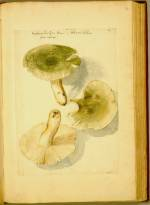

Carolus Clusius, Zwammen uit West-Pannonië. Zesentachtig aquarellen op losse bladen van verschillend formaat, gemonteerd in zeventiende-eeuwse band, 87 ff., 435 x 275 mm. Szalonak, 1584. -- (BPL 303)
De in Arras geboren Carolus Clusius (1526-1609), die aanvankelijk rechten gestudeerd had, zette zich pas in 1549 op aanraden van de humanist en hervormer Philippus Melanchton aan de studie van de medicijnen. Het bleek een voortreffelijk advies, al zou Clusius het nooit tot praktizerend medicus brengen. Zijn interesse ging vooral uit naar de plantkunde, toen nog hoofdzakelijk bestudeerd vanuit de geneesmiddelenleer. Hij ontwikkelde zich tot een van de beste botanisten van zijn tijd. Op zijn vele omzwervingen door Europa bracht hij de plantenwereld van verschillende gebieden systematisch in kaart. Het fraaiste verbeeld daarvan zijn de hier getoonde aquarellen van paddestoelen. Zij dateren uit de jaren dat hij onder bescherming van Maximiliaan II, later van Rudolf II in Oostenrijk en Hongarije verbleef.
De illustraties lagen ten grondslag aan zijn Fungorum historia, de eerste monografie over paddestoelen, die in 1601 in Leiden verscheen als onderdeel van zijn Opera omnia. De aquarellen moeten het werk zijn van een ervaren kunstenaar. Zij bieden natuurgetrouwe afbeeldingen, die met veel gevoel voor de werkelijke kleuren zijn uitgevoerd. In de gedrukte uitgave bleef van de kwaliteit weinig over. Teruggebracht tot zwart/wit moesten de kleuren in de beschrijvingen van de planten worden weergegeven. In zekere zin was het materiaal dan ook te goed voor het doel waarvoor het uiteindelijk bestemd was.
Het voorbereidende werk was mogelijk gemaakt door de steun een Hongaars magnaat en maecenas, Baldisár Batthyány. Dank zij hem kon ook een voortreffelijk kunstenaar voor de platen worden aangetrokken. Vermoedelijk was dat Essaye le Gillon, een neef van Clusius, die eveneens lange tijd als kunstenaar in Wenen vertoefde.
De getoonde aquarel stelt de Russula virescens (Schff) Fr. voor.
Literatuur
- Carolus Clusius, Fungorum in Pannoniis observatorum brevis historia, et Codex Clusii [...]. Hrsg. von Stephan A. Aumüller und József Jeanplong Graz. [etc.] 1983.
| vorige pagina | top pagina |